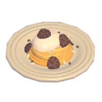
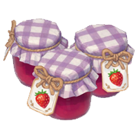
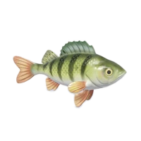

Méthodes de Revenus

Revendre les puzzles
Une fois assemblez les puzzles se revendent a bon prix

Faire des pâtes à la truffe et crème
★-900,★★-1350,★★★-1800,

Faire de la confiture de Fraises
★-1580,★★-2370,★★★-3160,

Vendre ses récoltes au dessus de 1★
Si tu n'as pas les recettes de cuisine tu peut vendre les récoltes brut

Cuisiner et vendre ses poissons
Ne cuisine que les 1★ vend le reste